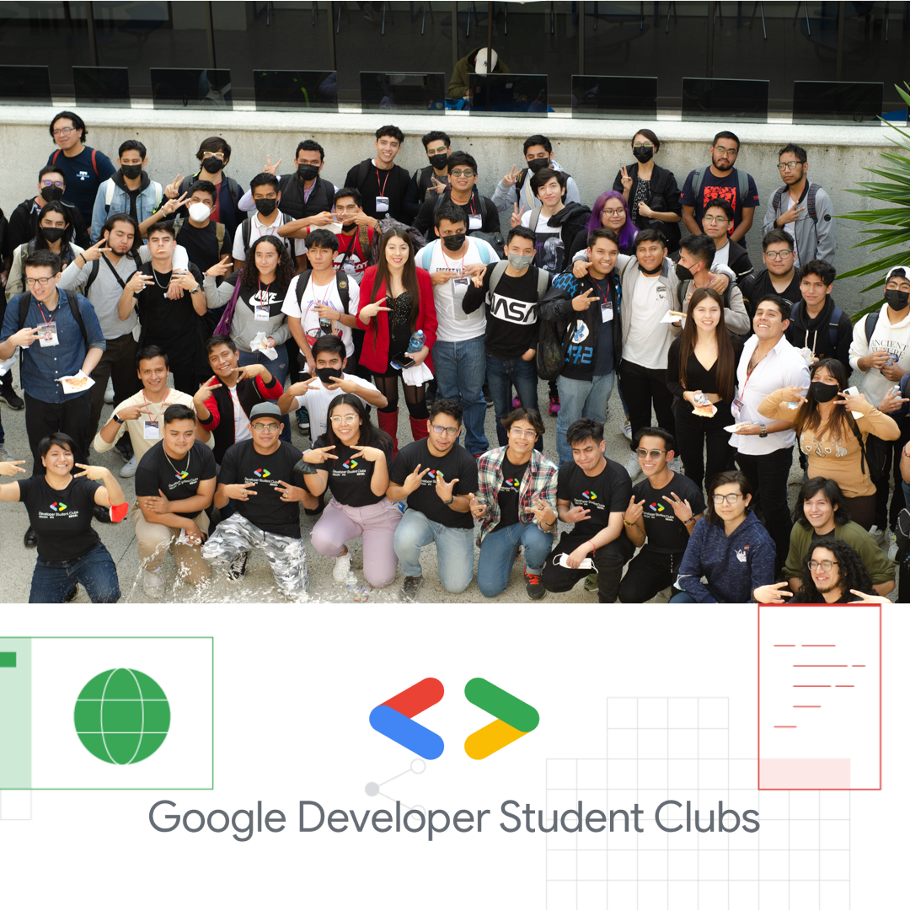

Soy ingeniero de software apasionado por aprender y crear. Estudiante mexicano de Ingeniería en Sistemas Computacionales en ESCOM IPN desde 2020. Miembro del Core team del Google Developer ESCOM IPN y IBM zSystems Student Ambassador. Apasionado por el desarrollo móvil y el diseño UI/UX.
Brandon Jesús Hernández Herrera
Ingeniero en Sistemas Computacionales
@brandonhxrr
Hobbies

Comunidades de tecnología
Participante activo de varias comunidades de tecnología en las cuales he tenido la oportunidad de ser ponente y mentor.
Programación competitiva
Me apasiona aprender sobre algoritmos y participar en competencias para probarme a mí mismo.
Algoritmo SHA
La familia de algoritmos de hash criptográficos Secure Hash Algorithm (SHA) fue desarrollada por la Agencia de Seguridad Nacional (NSA) de los Estados Unidos en la década de 1990. El objetivo era crear una función hash segura y resistente a los ataques criptográficos, que pudiera utilizarse para garantizar la integridad de los datos y la autenticación de mensajes. El primer algoritmo de la familia SHA, conocido como SHA-0, fue publicado en 1993, pero presentó algunas debilidades de seguridad y fue rápidamente reemplazado por SHA-1 en 1995. SHA-1 se convirtió en el algoritmo de hash más utilizado en todo el mundo y se utilizó ampliamente para la firma digital y la autenticación de mensajes. Sin embargo, en 2005, se descubrieron algunas debilidades en SHA-1 que podrían permitir ataques de colisión, lo que significa que dos mensajes diferentes podrían producir el mismo valor hash. Como resultado, la NIST (National Institute of Standards and Technology) de los Estados Unidos anunció la retirada gradual de SHA-1 en 2010 y la adopción de los algoritmos de la familia SHA-2, que se consideraban más seguros. Actualmente, la familia de algoritmos SHA-2, que incluye SHA-224, SHA-256, SHA-384 y SHA-512, es ampliamente utilizada para garantizar la integridad de los datos y la autenticación de mensajes en aplicaciones criptográficas, como TLS/SSL, PGP y SSH. Además, en 2015 se presentó un nuevo algoritmo de hash llamado SHA-3, que se seleccionó como estándar después de un proceso de evaluación de cinco años y se considera una alternativa segura a SHA-2.